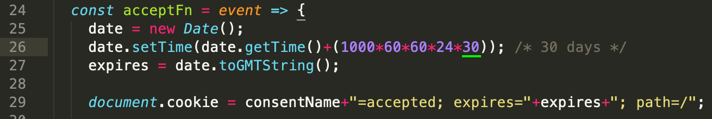

Thank you for choosing "Mono - Multi-Purpose HTML5 Template". This documentation will help you to familiarise how the template is structured and how to use the features. If you have any questions that are beyond the scope of this help file, please feel free to email via our user page contact form here.
If you like this template please don't forget rate it 5 :)
themeforest.net/downloads
<!DOCTYPE html>
<html lang="en">
<head>
<meta charset="utf-8">
<meta name="viewport" content="width=device-width, initial-scale=1, shrink-to-fit=no">
<meta name="description" content="">
<title>Mono</title>
<!-- Favicon -->
<link rel="shortcut icon" href="../assets/images/favicon.png">
<!-- CSS -->
<link href="../assets/plugins/bootstrap/bootstrap.min.css" rel="stylesheet">
<link href="../assets/plugins/owl-carousel/owl.carousel.min.css" rel="stylesheet">
<link href="../assets/plugins/owl-carousel/owl.theme.default.min.css" rel="stylesheet">
<link href="../assets/plugins/magnific-popup/magnific-popup.min.css" rel="stylesheet">
<link href="../assets/css/theme.css" rel="stylesheet">
<!-- Fonts/Icons -->
<link href="../assets/plugins/bootstrap-icons/bootstrap-icons.css" rel="stylesheet">
<link href="../assets/plugins/font-awesome/css/all.css" rel="stylesheet">
</head>
<body data-preloader="1">
<div class="header">
<div class="container">
<div class="header-logo">
...
</div>
<div class="header-menu">
...
</div>
<div class="header-menu-extra">
...
</div>
<button class="header-toggle">
...
</button>
</div>
</div>
<div class="section">
<div class="container">
...
</div>
</div>
<footer>
<div class="section-sm">
<div class="container">
...
</div>
</div>
</footer>
<!-- ***** JAVASCRIPTS ***** -->
<script src="../assets/plugins/jquery.min.js"></script>
<script src="https://maps.googleapis.com/maps/api/js?key=YOUR_API_KEY"></script>
<script src="../assets/plugins/plugins.js"></script>
<script src="../assets/js/functions.js"></script>
</body>
</html>
SCSS is an extension of CSS, adding nested rules, variables, mixins, selector inheritance, and more. It's translated to well-formatted, standard CSS using the command line tool or a web-framework plugin.
"SCSS" (for "Sassy CSS") is a superset of CSS's syntax. This means that every valid CSS stylesheet is valid SCSS as well. SCSS files use the extension .scss
We recommend you to use an application called Scout-App (v2.12.12) for converting SCSS to CSS. Scout-App can run in windows, linux and mac.
Click here to download the application.
This video demonstrates how to use Scout-App application:
There are 9 theme color scheme options available. Follow the below instructions to set it up.
<!DOCTYPE html>
<html lang="en">
<head>
<meta charset="utf-8">
<meta name="viewport" content="width=device-width, initial-scale=1, shrink-to-fit=no">
<meta name="description" content="">
<title>Mono</title>
<!-- Favicon -->
<link rel="shortcut icon" href="../assets/images/favicon.png">
<!-- CSS -->
<link href="../assets/plugins/bootstrap/bootstrap.min.css" rel="stylesheet">
<link href="../assets/plugins/owl-carousel/owl.carousel.min.css" rel="stylesheet">
<link href="../assets/plugins/owl-carousel/owl.theme.default.min.css" rel="stylesheet">
<link href="../assets/plugins/magnific-popup/magnific-popup.min.css" rel="stylesheet">
<link href="../assets/css/theme.css" rel="stylesheet">
<!-- Theme Color -->
<link href="../assets/css/theme-colors/theme-color-blue.css" rel="stylesheet">
<!-- Fonts/Icons -->
<link href="../assets/plugins/bootstrap-icons/bootstrap-icons.css" rel="stylesheet">
<link href="../assets/plugins/font-awesome/css/all.css" rel="stylesheet">
</head>
<body class="theme-color-blue preloader-theme" data-preloader="1">
...
Mono uses Open Sans sans-serif, Playfair Display serif, Nunito sans-serif, Poppins sans-serif and, Outfit sans-serif fonts from Google Fonts Library. And it's included through assets/css/scss/theme.scss
theme.scss(line 12)
@import url('https://fonts.googleapis.com/css2?family=Nunito:wght@200;300;400;500;600;700;800;900&family=Open+Sans:wght@300;400;500;600;700&family=Playfair+Display:wght@400;700&family=Poppins:wght@100;200;300;400;500;600;700;800;900&family=Outfit:wght@200;300;400;500;600;700;800&display=swap');
You can use the following classes to set the font family of an element:
Bootstrap Icons and, FontAwesome sets are included in the template.
By default, icons will appear at 1em. And you can change the icon size by using classes:
You should add the size class to the parent element of an icon:
<div class="icon-lg">
<i class="bi bi-check"></i>
<i class="bi bi-check"></i>
</div>
The template has 3 different Page Preloaders with various color options. You can change the preloader style by just simply changing the value number of data-preloader in <body> tag with '1'/'2'/'3'
Click here to view the live preview of page preloaders.
1. Include the path of cookie-consent.js to the end of body
<!-- ***** JAVASCRIPTS ***** -->
<script src="../assets/plugins/jquery.min.js"></script>
<script src="https://maps.googleapis.com/maps/api/js?key=YOUR_API_KEY"></script>
<script src="https://polyfill.io/v3/polyfill.min.js?features=IntersectionObserver"></script>
<script src="../assets/plugins/plugins.js"></script>
<script src="../assets/js/functions.js"></script>
<script src="../assets/js/cookie-consent.js"></script>
</body>
</html>
2. Create and add the Cookie Consent HTML:
<!-- GDPR - Cookie Consent -->
<div id="cookie-consent" class="consent-hidden bg-dark-09 p-4 p-lg-5 text-center">
<p class="font-large">This website uses cookies & third party services</p>
<a id="accept-consent" class="button button-md button-white-2 button-rounded mt-3" href="#">Accept & Close</a>
</div>
<!-- end GDPR - Cookie Consent -->
Click here to view the live demo of cookie consent.
Cookie expires in 30 days by default, you can change it by editing the below value in cookie-consent.js
You can increase the size of header by adding .header-lg or .header-xl class to the .header class element.
<div class="header header-lg">
<div class="container">
<div class="header-logo">
..
</div>
<div class="header-menu">
...
</div>
<button class="header-toggle">
<span></span>
</button>
</div>
</div>
You can use the dark Header Menu by adding .header-color-dark (or .header-color-black) class to the .header class element.
<div class="header header-color-dark">
<div class="container">
<div class="header-logo">
..
</div>
<div class="header-menu">
...
</div>
<button class="header-toggle">
<span></span>
</button>
</div>
</div>
The position of the Header Menu can be set to static(default) or sticky. You can use them by adding .sticky or .sticky-autohide class to the .header class element.
<div class="header sticky-autohide">
<div class="container">
<div class="header-logo">
..
</div>
<div class="header-menu">
...
</div>
<button class="header-toggle">
<span></span>
</button>
</div>
</div>
There are 2 font style options you can use on Header Menu. Simply add .font-2 class to the .header-menu class element to use the secondary font style.
<div class="header">
<div class="container">
<div class="header-logo">
..
</div>
<div class="header-menu font-2">
<ul class="nav">
..
</ul>
</div>
<button class="header-toggle">
<span></span>
</button>
</div>
</div>
You can use dark dropdown by adding .dropdown-color-dark class to the .header-menu class element.
<div class="header">
<div class="container">
<div class="header-logo">
..
</div>
<div class="header-menu dropdown-color-dark">
...
</div>
<button class="header-toggle">
<span></span>
</button>
</div>
</div>
Portfolio has 4 different filter styles you can choose from.

<div class="filter">
<ul>
<li data-filter="all">All</li>
<li data-filter=".category-1">First</li>
<li data-filter=".category-2">Second</li>
<li data-filter=".category-3">Third</li>
</ul>
</div>
<div class="portfolio-masonry">
...
</div>
<div class="filter filter-style-2">
<ul>
<li data-filter="all">All</li>
<li data-filter=".category-1">First</li>
<li data-filter=".category-2">Second</li>
<li data-filter=".category-3">Third</li>
</ul>
</div>
<div class="portfolio-masonry">
...
</div>
<div class="filter filter-style-3">
<ul>
<li data-filter="all">All</li>
<li data-filter=".category-1">First</li>
<li data-filter=".category-2">Second</li>
<li data-filter=".category-3">Third</li>
</ul>
</div>
<div class="portfolio-masonry">
...
</div>
<div class="filter filter-style-4">
<ul>
<li data-filter="all">All</li>
<li data-filter=".category-1">First</li>
<li data-filter=".category-2">Second</li>
<li data-filter=".category-3">Third</li>
</ul>
</div>
<div class="portfolio-masonry">
...
</div>
Basic portfolio grid:
<div class="row portfolio-grid g-4 hover-style-2">
<div class="col-12 col-md-6 col-lg-4 portfolio-item category-1">
...
</div>
...
</div>
Since masonry doesn't work with bootstrap grid system, we've made our custom responsive 6 column system for masonry portfolio layout. Just simply add the column class(column-1 to column-6) to .portfolio-masonry element. And use .spacing-0 (or 1/2/3/4/5/6) class for setting the space between portfolio boxes.
The below example will set the columns to three equal-width:
<div class="portfolio-masonry column-3 spacing-1 hover-style-2">
<div class="portfolio-item category-1">
...
</div>
<div class="portfolio-item category-2">
...
</div>
...
</div>
Mono uses Owl Carousel 2 jQuery plugin to handle all the sliders of the template. It's fully responsive and it has large amount of options. You can change the default options via html data-owl-* attribute.
You should create a div with .owl-carousel class and the first divs inside of this class will be the boxes of the slider:
<div class="owl-carousel">
<!-- slider box 1 -->
<div>
..
</div>
<!-- slider box 2 -->
<div>
..
</div>
...
</div>
The below example shows how to create slider with 2 columns(on all screen) with navigation.
<div class="owl-carousel" data-owl-items="2" data-owl-nav="true" data-owl-dots="false">
<!-- slider box 1 -->
<div>
..
</div>
<!-- slider box 2 -->
<div>
..
</div>
...
</div>
The below example shows how to create responsive slider with navigation and dots. data-owl-xs, data-owl-sm, data-owl-md, data-owl-lg and data-owl-xl are for screen size and the value number is how many columns to show on that screen size.
<div class="owl-carousel" data-owl-nav="true" data-owl-xs="1" data-owl-sm="2" data-owl-md="3" data-owl-lg="4" data-owl-xl="4">
<!-- slider box 1 -->
<div>
..
</div>
<!-- slider box 2 -->
<div>
..
</div>
...
</div>
Click here to see the live demos of Owl Carousel.
You can create a Circular Chart Bar by using .pie-chart class element. Any number, text or icon values should be wrapped inside .pie-chart-content class element.
Basic Pie Chart:
<div class="pie-chart" data-size="110" data-percent="90" data-bar-color="#141414" data-track-color="#e6e6e6" data-scale-color="rgba(0, 0, 0, 0.3)">
<div class="pie-chart-content">
<span class="percent"></span>
</div>
</div>
Click here to see the live demos of Pie Charts.
Mono uses gmaps plugin to show Google Maps. By default, the maps width is set to 100% and height is set to 0 and you can set the height of the map using classes.
You can use multiple maps on one page. And every single map should have different id's (#map1, #map2 etc.).
Basic Map:
<div id="map1" class="gmap gmap-md" data-latitude="51.513569" data-longitude="-0.123443"></div>
Click here to find your Latitude and Longitude.
In order to use Google Maps, you need to get Google API Key first. Click here to get your API Key.
Then place your API Key in 'YOUR_API_KEY' in your HTML:
<script src="https://maps.googleapis.com/maps/api/js?key=YOUR_API_KEY"></script>
Click here to see the live examples of Google Maps.
Basic Contact form:
<div class="contact-form">
<form method="post" id="contactform">
<div class="row gx-3 gy-0">
<div class="col-12 col-sm-6">
<input type="text" id="name" name="name" placeholder="Name" required>
</div>
<div class="col-12 col-sm-6">
<input type="email" id="email" name="email" placeholder="E-Mail" required>
</div>
</div>
<input type="text" id="subject" name="subject" placeholder="Subject" required>
<textarea name="message" id="message" placeholder="Message"></textarea>
<button class="button button-lg button-outline-dark" type="submit">Send Message</button>
</form>
<!-- Submit result -->
<div class="submit-result">
<span id="success">Thank you! Your Message has been sent.</span>
<span id="error">Something went wrong, Please try again!</span>
</div>
</div><!-- end contact-form -->
The template has ready to use AJAX/PHP contact form built in it. In order to recieve emails directly to your email address just simply replace your-email@example.com with your email address in assets/php/contact-form.php file.
retina.js checks the retina activated images on the page to see if there is a high-resolution version of that image on the server. If a high-resolution variant exists, the script will swap in that image in-place.
For example, if your picture is located at "/images/my-picture.jpg" and the markup for this image looks like this:
<img src="images/picture.jpg" data-rjs="2">
retina.js will look for a corresponding image located at "/images/my-picture@2x.jpg" when it's activated. If it finds the @2x image on your server then it will load that onto your web page, effectively transforming your picture's markup to look like this:
<img src="images/picture@2x.jpg">
Please apply data-rjs="2" to the image you want to activate the retina.js on:
<img src="images/picture.jpg" data-rjs="2">
Scroll to Top button would appear at bottom right of the screen when you scroll down the page. And circle button styles can be applied to this button. This button should be wrapped inside .scrolltotop element.
Basic Scroll to Top button:
<!-- Scroll to top button -->
<div class="scrolltotop">
<a class="button-circle button-circle-md button-circle-dark" href="#">
<i class="bi bi-arrow-up"></i>
</a>
</div>
<!-- end Scroll to top button -->
Click here to see the full list of the web elements.
| HTML Class Names | Description |
|---|---|
| border | Equals to 'border: 1px solid;' |
| border-top | Equals to 'border-top: 1px solid;' |
| border-right | Equals to 'border-right: 1px solid;' |
| border-bottom | Equals to 'border-bottom: 1px solid;' |
| border-left | Equals to 'border-left: 1px solid;' |
| border-style-dotted | Equals to 'border-style: dotted;' |
| border-style-dashed | Equals to 'border-style: dashed;' |
| border-0 | Equals to 'border: 0;' |
| border-top-0 | Equals to 'border-top: 0;' |
| border-right-0 | Equals to 'border-right: 0;' |
| border-bottom-0 | Equals to 'border-bottom: 0;' |
| border-left-0 | Equals to 'border-left: 0;' |
| HTML Class Names | Description |
|---|---|
| text-start | Equals to 'text-align: left;' |
| text-center | Equals to 'text-align: center;' |
| text-end | Equals to 'text-align: right;' |
Click here to get more information about bootstrap text alignment.
| HTML Class Names | Description |
|---|---|
| font-family-primary | Equals to 'font-family: 'Open Sans', sans-serif' |
| font-family-playfair | Equals to 'font-family: 'Playfair Display', serif' |
| font-family-poppins | Equals to 'font-family: 'Poppins', sans-serif' |
| font-family-nunito | Equals to 'font-family: 'Nunito', sans-serif' |
| font-family-outfit | Equals to 'font-family: 'Outfit', sans-serif' |
| font-small | Equals to 'font-size: 0.9em' |
| font-large | Equals to 'font-size: 1.063em' |
| fw-thin | Equals to 'font-weight: 100' |
| fw-lighter | Equals to 'font-weight: 200' |
| fw-light | Equals to 'font-weight: 300' |
| fw-normal | Equals to 'font-weight: 400' |
| fw-medium | Equals to 'font-weight: 500' |
| fw-semi-bold | Equals to 'font-weight: 600' |
| fw-bold | Equals to 'font-weight: 700' |
| fw-bolder | Equals to 'font-weight: 800' |
| fw-black | Equals to 'font-weight: 900' |
| letter-spacing-1 | Equals to 'letter-spacing: 1px' |
| letter-spacing-2 | Equals to 'letter-spacing: 2px' |
| letter-spacing-3 | Equals to 'letter-spacing: 3px' |
| letter-spacing-4 | Equals to 'letter-spacing: 4px' |
| line-height-100 | Equals to 'line-height: 100%' |
| line-height-110 | Equals to 'line-height: 110%' |
| line-height-120 | Equals to 'line-height: 120%' |
| line-height-130 | Equals to 'line-height: 130%' |
| line-height-140 | Equals to 'line-height: 140%' |
| line-height-150 | Equals to 'line-height: 150%' |
| line-height-160 | Equals to 'line-height: 160%' |
| HTML Class Names | Description |
|---|---|
| w-25 | Equals to 'width: 25%' |
| w-50 | Equals to 'width: 50%' |
| w-75 | Equals to 'width: 75%' |
| w-100 | Equals to 'width: 100%' |
| h-25 | Equals to 'height: 25%' |
| h-50 | Equals to 'height: 50%' |
| h-75 | Equals to 'height: 75%' |
| h-100 | Equals to 'height: 100%' |
Click here to get more information about bootstrap sizing.
Huge thanks to all this great plugins and resources that helped to make the template great and powerful.
| Term | Link |
|---|---|
| Appear Plugin | https://github.com/morr/jquery.appear |
| Easing Plugin | http://gsgd.co.uk/sandbox/jquery/easing |
| Bootstrap | http://getbootstrap.com |
| FontAwesome | http://fontawesome.io |
| ImagesLoaded | https://imagesloaded.desandro.com |
| Isotope | https://isotope.metafizzy.co |
| GMaps | https://hpneo.github.io/gmaps |
| Magnific Popup | http://dimsemenov.com/plugins/magnific-popup |
| Mixitup | https://github.com/patrickkunka/mixitup/ |
| Owl Carousel | https://owlcarousel2.github.io/OwlCarousel2 |
| Parallaxie | https://github.com/theultrasoft/Parallaxie |
| ScrollCue | https://prjct-samwest.github.io/scrollCue/ |
| Swiper | https://swiperjs.com/ |
| The Final Countdown | http://hilios.github.io/jQuery.countdown |
| Easy Pie Chart | https://github.com/rendro/easy-pie-chart |
| Typer | https://steven.codes/typerjs/ |
| Retina | http://imulus.github.io/retinajs |